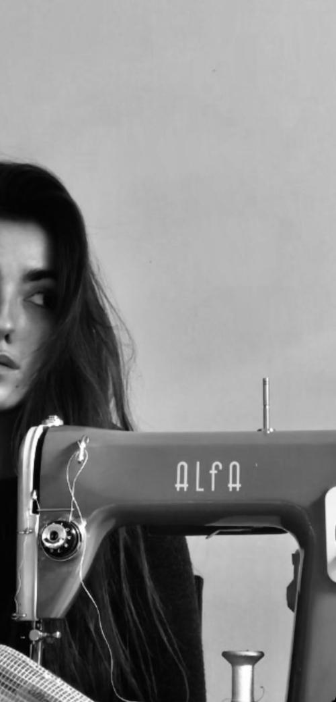

double leather bag
double leather bag
 DIPLOPÍA COLLECTION 2023
DIPLOPÍA COLLECTION 2023
 ARTISAN TAILORING
ARTISAN TAILORING: About me
It's Lara, and i am a fashion designer specializing in women's clothing.
My journey into fashion has been deeply personal and transformative. After experiencing a cerebral stroke and undergoing a challenging surgical procedure that resulted in double vision, I chose to channel this unique perspective into my designs.
This condition led me to a creative breakthrough: I began designing a wardrobe where every piece incorporates a "double" aesthetic. My clothing features mirrored details and duplications that reflect my own visual experience.
Barcelona, SPAIN

Thank you for exploring my work, and I hope my designs inspire and resonate with you as much as they do with me.